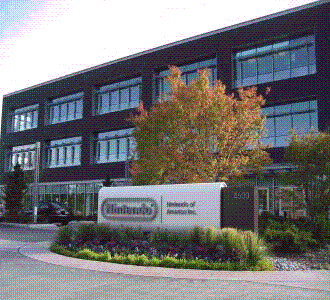

|  | 任天堂（Nintendo）是日本一家主要从事电子游戏软硬件开发的公司，电子游戏业三巨头之一，现代电子游戏产业的开创者。任天堂创立于1889年9月23日，以生产花札起家，1970年代后期投入电子游戏产业，1983年推出了第一代家用游戏机FC。 任天堂以"创造独特的娱乐方式"为基本方针，以"为所有和任天堂产生联系的人们带来笑容"为企业社会责任，开发发行了马力欧、宝可梦、塞尔达传说等知名游戏系列，FC、SFC、N64、NGC、Wii、WiiU、Switch等家用游戏机以及Game&Watch、GB、GBA、GBASP、NDS、3DS、Switch Lite等掌上游戏机。截止2019年6月末，任天堂已在全球销售了约7.5亿台游戏主机，其中掌机4.267亿台、家用机3.225亿台。 2017年3月3日，任天堂第七代家用游戏机Nintendo Switch正式发售，以家用机、掌机一体化为主要特点。截至2021年9月末，Nintendo Switch硬件销量达9287万台，软件销量达6.81亿份。 |
版权©所有
2022年12月15日